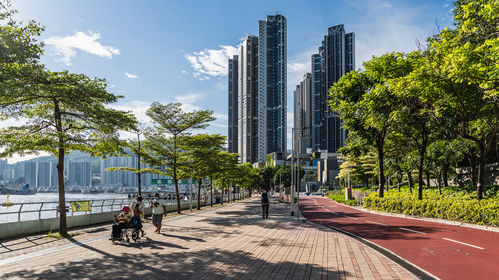
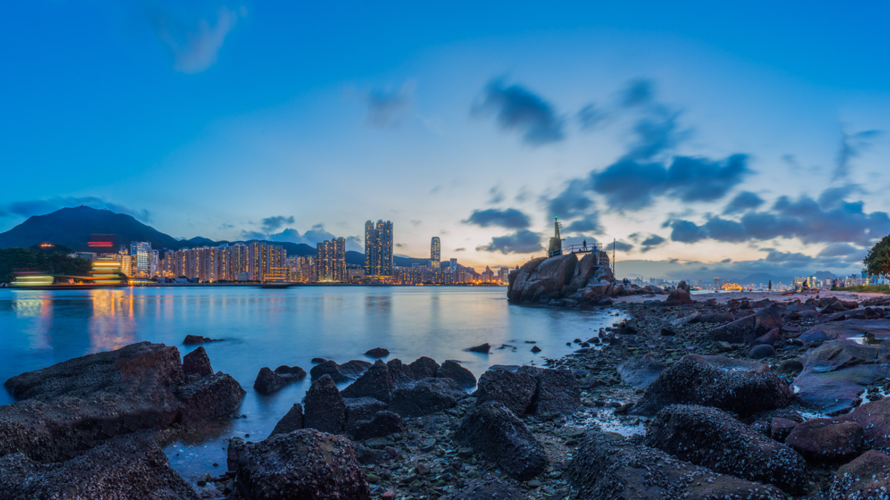
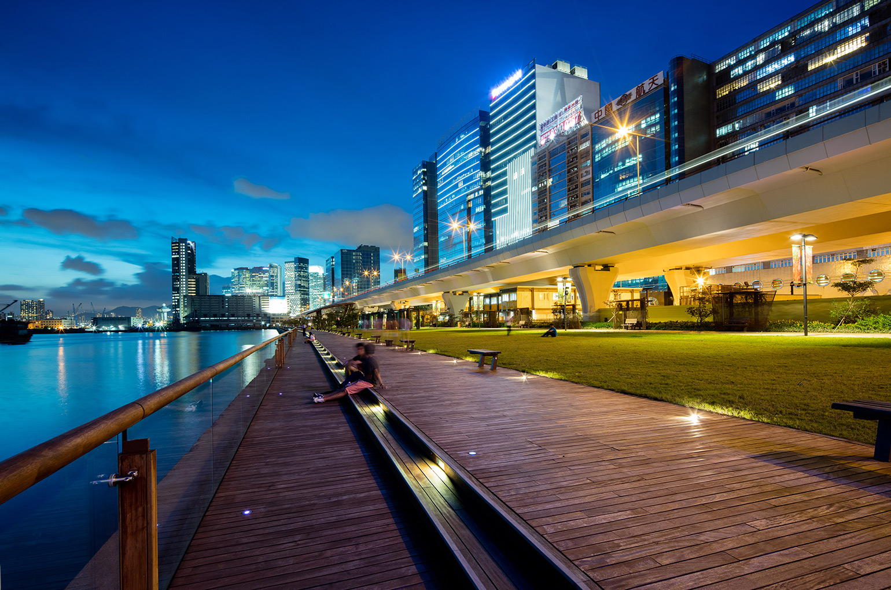

Tsuen Wan Park
The further you get from the city centre, the higher are the chances of seeing more green. Tsuen Wan Park is built along the coast near the pier, with a charming maritime theme adopted into its design. Within the green oasis, there is an artificial lake and waterfall lined with trees to provide shade and bring coolness into the air circulation during summer. It’s the perfect, most tranquil spot to get away from all of your worries and let the calming sounds of the waterfall wash them away.
Lei Yue Mun Fishing Village
Lei Yue Mun is a small village in Kowloon area in HK. People living there are still making the fishing business and you could learn about the history - How Hong Kong looks like in the old days.
Kwun Tong Promenade
About one kilometre in length, the waterfront boardwalk in the Promenade provides visitors with not only close-up views of the Kai Tak Cruise Terminal and the Runway Park, which are the new landmarks of East Kowloon, but also splendid night-time views of Hong Kong Island East and the panoramas of Victoria Harbour and Lei Yue Mun.